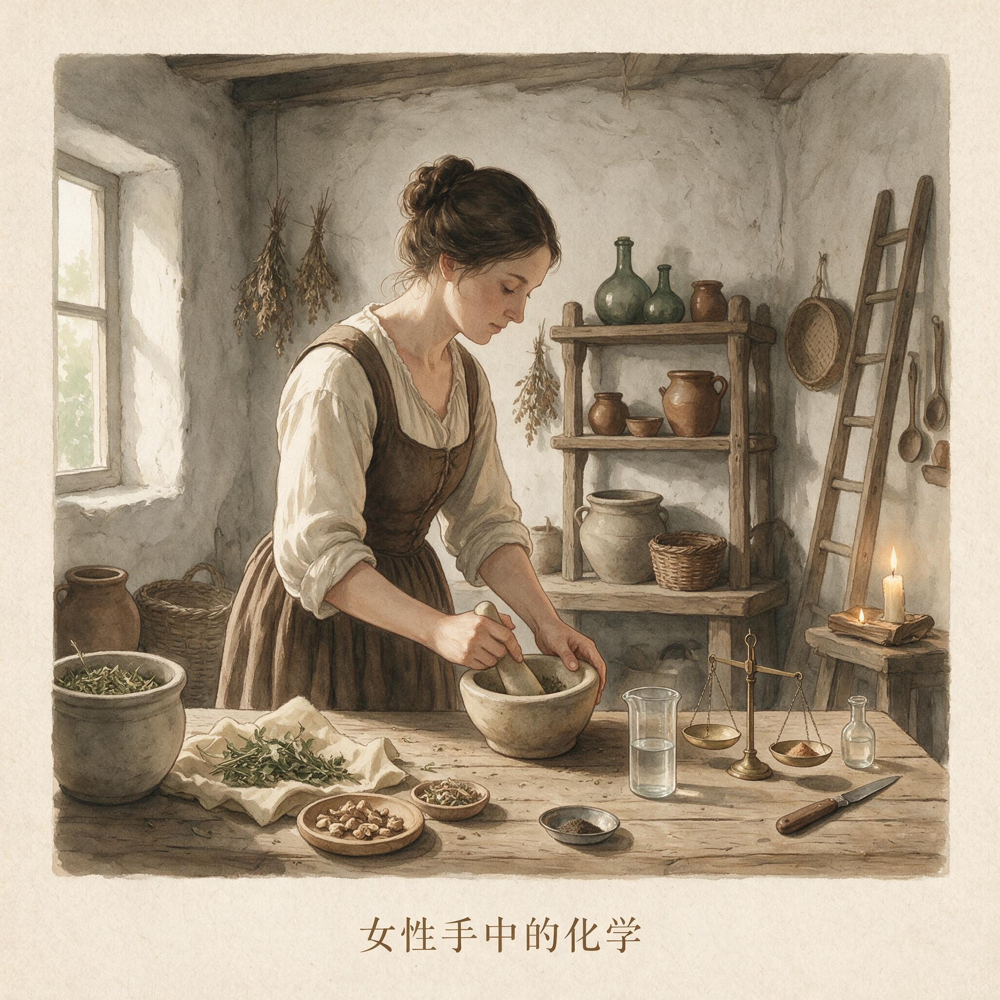

第 6 章
女性手中的化学
1890年秋天，伦敦东区白教堂路的一家药房，一位妇女在柜台前站了将近五分钟。她穿着干净但洗得发白的裙子，手指反复摩挲着手袋的金属搭扣。药房伙计注意到她已经不是第一次来了——上周她来

女性手中的化学：历史出版插图
AI 生成插图，非史实影像。
过一次，在店里转了一圈，什么都没买就走了。这一次她终于开口，声音压得很低，要买“已婚妇女用的卫生液”。
伙计从柜台下取出一个棕色的玻璃瓶，标签上印着“女士专用洗涤剂”，成分栏写着硫酸锌溶液。没有使用说明，没有剂量提示，没有副作用警告。价格是六便士。妇女付了钱，把瓶子塞进手袋，快步离开药房，整个过程不到三分钟。
这瓶液体是当时英美市场上数十种阴道冲洗剂产品中的一种。它的出现标志着一个重要的技术转向：避孕手段开始从男性配合转向女性控制。但这次购买场景中真正值得注意的，不是那个棕色的玻璃瓶本身，而是它所处的灰色地带——产品以“卫生用品”的名义销售，使用者在购买时不敢说出它的真实用途，药剂师不会提供使用指导，标签上刻意回避任何与避孕相关的信息。
技术已经交到了女性手中，但围绕技术的知识、规范和权力关系，正在以一种新的方式重新编织。这个转向并非突然发生。回到这个场景发生的三十年前，也就是19世纪60年代，阴道冲洗作为一种避孕方法的民间知识已经在欧美城市的下层妇女中流传。其原理基于一个朴素到近乎天真的理解：性交后立即将液体注入阴道，可以把精液冲洗出来，就像清洗一件弄脏的容器。
早期的冲洗液配方在妇女之间口口相传，有些是清水加醋，有些用柠檬汁稀释，有些加入明矾，还有一些使用了硫酸锌或奎宁溶液。这些配方属于典型的“经验暗河”——被官方知识体系排斥在外，却在民间口传网络中隐秘流动的避孕实践知识。它们没有经过任何系统的有效性测试，剂量全凭经验，副作用则完全无人记录。
到19世纪80年代，情况开始发生变化。商业资本嗅到了这个隐秘市场的气味。药剂师、药房、小型化学品作坊开始将冲洗液配方标准化、包装化、商品化。
1873年美国通过的《康斯托克法》将避孕信息和器具列为“淫秽物品”，禁止邮寄和传播，但冲洗剂因其名义上的“卫生”功能而得以在灰色地带合法流通。制造商迅速学会了在标签上做文章：产品被标注为“女性清洁液”“已婚妇女专用品”“妇科洗涤剂”，绝口不提避孕二字。这种语言上的自我审查既是对法律的规避，也塑造了一种特殊的消费关系——买卖双方都知道产品的真实用途，但谁也不会说破。知识被包裹在沉默里，而这种沉默本身就是一种权力结构：制造商掌握着配方和生产的全部信息，销售商知道产品流向哪些人群，唯独使用者被隔绝在信息的最末端，只能凭借模糊的民间经验和广告暗示来使用这些化学品。
冲洗剂的避孕效果取决于两个关键变量：时机和配方。酸性溶液理论上可以杀死精子或降低其活动能力，但阴道内壁的褶皱和宫颈口的黏液使得冲洗很难彻底清除所有精液。
医学史研究者在20世纪后期对19世纪末的冲洗剂配方进行回溯评估时指出，即使在使用者严格按照民间流传的方法操作——性交后立即冲洗、使用足够浓度的酸性溶液、反复多次注入——失败率仍然在20%至40%之间。这个数字意味着，在十个性行为活跃且依赖冲洗剂避孕的妇女中，每年会有两到四人意外怀孕。但对于那些无法获得其他避孕手段、或者无法要求丈夫使用避孕套的妇女而言，冲洗剂提供了一种可及的选择。
它的核心优势不在于有效性，而在于自主性：不需要医生处方，不需要男性配合，甚至可以在对方完全不知情的情况下使用。在19世纪末的婚姻关系中，这种“不知情”对许多妇女来说至关重要——丈夫可能反对避孕，可能将妻子主动避孕视为对男性权威的挑战，可能在发现后施加暴力。
冲洗剂让避孕变成了一件可以私下完成的事。但这种“私下”也意味着风险被完全个人化了。如果冲洗失败导致怀孕，承担后果的是使用者自己。如果冲洗液浓度过高灼伤阴道黏膜，忍受疼痛的也是使用者自己。
如果长期使用破坏了阴道内的正常菌群导致感染，寻求治疗的还是使用者自己——而且她在就医时很可能不敢说出实情，因为使用避孕手段在当时许多地方仍然是一件不体面的事。技术赋予了女性操作的能力，却把操作的全部风险和道德负担留在了她们身上。
进入19世纪90年代，冲洗剂市场进一步分化。价格较高的产品开始在广告中暗示“预防”功能，虽然仍然不敢直接使用避孕一词。一份1895年在美国中西部报纸上刊登的“女性卫生液”广告这样写道：“已婚妇女的秘密保护——无需医生，无需手术，完全无害。”这里的“秘密保护”一词是当时避孕产品广告的标准修辞，目标读者一看便知其含义，但在法律上又不足以构成传播避孕信息的证据。价格较低的冲洗液则走另一条路：它们以散装形式出现在药房柜台，由药剂师从大瓶中分装到没有标签的小瓶里，价格便宜到最贫困的女工也能负担。
这种价格分化意味着，同一项技术在不同阶层的妇女手中产生了截然不同的使用体验：中产阶级妇女可以购买有品牌、有包装、有模糊说明的产品，在相对隐私的家中使用；工人阶级妇女则往往只能购买来路不明的散装液体，在拥挤的出租屋里、在缺乏清洁用水的条件下使用，感染风险成倍增加。
就在冲洗剂市场迅速扩张的同时，另一类女性自主避孕产品开始进入市场：杀精栓剂。这是一种在性交前放入阴道的小型药栓或药片，通常含有奎宁、可可脂或其他被认为能杀死精子的化学物质。栓剂的原理比冲洗剂更进一步：它不是在事后补救，而是在事前设防。这意味着避孕从一种应急措施变成了一种计划行为——女性需要在性行为发生之前就做出判断和准备。最早的商业化杀精栓剂出现在19世纪80年代末的英国和德国。英国伦敦的一家制药公司在1887年推出了一款名为“保护栓”的产品，成分是奎宁和可可脂的混合物。可可脂在体温下会融化，释放出奎宁，理论上可以在宫颈口形成一道化学屏障。
产品说明书上写的用途是“妇科护理”，但销售渠道和广告语言都明确指向避孕。这款产品在出版于伦敦的小册子中被悄悄推荐，这些册子通过邮政系统流入中产阶级家庭，正是第五章所描述的那场印刷品上的生育战争的一部分。杀精栓剂的避孕原理建立在当时对精子生物学的初步理解之上。19世纪的生理学研究已经确认，精子是受精的必要条件，而某些化学物质可以抑制精子的活动能力。奎宁是当时已知的有效杀精物质之一，它最初作为抗疟疾药物被广泛使用，医生在使用过程中偶然发现它对精子有抑制作用。这个发现从医学文献渗入民间知识，最终被商业资本捕捉，转化为消费品。
但问题在于，栓剂中的奎宁浓度能否达到杀死所有精子的水平？栓剂在阴道内融化后能否均匀覆盖宫颈口？性交过程中栓剂是否会被推离有效位置？这些问题没有任何监管机构去验证。制造商自行决定配方，自行决定使用说明，自行决定产品宣传中提到的“保护”效果。消费者唯一能依赖的，是品牌声誉、口碑传播和自己的亲身体验。
到19世纪90年代中期，杀精栓剂的市场已经从欧洲扩展到美国。美国市场上的产品更加多样化，有些使用硼酸代替奎宁，有些加入了明胶作为基质，有些被制成粉末需要使用者自己加水调成糊状。每一种产品都声称自己“安全可靠”，但没有一种产品经过任何形式的临床试验。1898年，一位美国妇科医生在医学杂志上表达了他的担忧：“我见过太多使用这些栓剂的妇女最终仍然怀孕，她们来就诊时充满了困惑和自责，认为是自己使用方法不当。但实际上，问题可能出在产品本身。”
这位医生的记录只到这一步，他没有展开讨论产品监管的问题，但这个观察已经触及了问题的核心：当避孕技术被完全交给市场时，使用者不仅要承担使用失败的风险，还要承担失败后的心理负担——她们被引导相信产品是有效的，所以当怀孕发生时，她们首先怀疑的是自己。与杀精栓剂几乎同时出现的，还有物理屏障类女性避孕器具：宫颈帽和阴道隔膜。
这两种器具的原理相同——在宫颈口放置一个物理屏障，阻止精子进入子宫——但形态和佩戴方式略有差异。宫颈帽较小，直接套在宫颈上；阴道隔膜较大，覆盖整个阴道上部。两者的共同点是：它们都需要根据使用者身体的精确尺寸来选配，这意味着它们不能像冲洗剂或栓剂那样简单地放在药房柜台上售卖。
宫颈帽的最早原型可以追溯到19世纪30年代，一位德国妇科医生用蜡为一位患者制作了一个宫颈罩，但这个案例只是个案，没有发展为商业化产品。真正让宫颈帽进入市场的，是19世纪80年代硫化橡胶工艺的成熟。硫化橡胶可以制成柔软而有弹性的薄膜，既能在体内保持形状，又不会对组织造成伤害。这一材料突破——与第五章描述的橡胶避孕套的技术基础完全相同——使宫颈帽和阴道隔膜从零星的医患定制变成了可以标准化生产的工业产品。1882年，德国医生威廉·门辛加发表了一篇论文，描述了一种用硫化橡胶制成的阴道隔膜，后来被称为“门辛加隔膜”。
他在论文中详细说明了这种器具的适配方法：医生需要对患者进行盆腔检查，测量宫颈到耻骨的距离，然后从一系列不同尺寸的隔膜中选择最合适的一个。门辛加强调，这种器具必须由医生处方和适配，不能由患者自行购买和使用。这个主张在当时有其医学合理性——尺寸不当的隔膜可能无法有效阻挡精子，也可能造成不适甚至损伤——但它同时也确立了一个重要的权力关系：女性要获得这种最有效的自主避孕手段，必须首先接受医学权威的检查和判断。
门辛加隔膜在德国和奥地利的妇科医生中逐渐得到推广，但它的传播速度远慢于冲洗剂和杀精栓剂。原因很明显：它需要医生参与，而这意味着费用、时间和隐私的暴露。在19世纪末的欧洲城市，看一次妇科医生的费用相当于一个女工几天的工资，而且就诊意味着要把自己最私密的身体部位暴露给一个通常是男性的医生，向他说明自己需要避孕的原因。这对于中上层阶级妇女来说可能只是尴尬，对于底层妇女来说则可能是不可逾越的障碍。
结果出现了这样一种分层：能够负担医生费用的妇女获得了最有效的避孕手段，而负担不起的妇女只能继续依赖效果不确定的冲洗剂和栓剂，或者什么都不用。
英国的情况稍有不同。19世纪80年代，一位名叫玛丽·斯特普斯的女性开始在英国推广宫颈帽。她的故事要到20世纪初才真正展开——她后来成为英国生育控制运动的核心人物——但在19世纪90年代，她已经在私下为一些妇女提供宫颈帽适配服务。斯特普斯本人拥有植物学博士学位，不是医生，但她通过自学掌握了盆腔检查技术。她之所以能够绕过医学体系的壁垒，是因为她在妇女中建立了信任网络：来找她的妇女大多是通过口传网络知道她的，她们在自己家中接受检查，费用远低于正规诊所。斯特普斯的实践表明，宫颈帽适配不一定非要由医生完成，但她也因此遭到了医学界的强烈反对。
英国医学协会在1899年的一份内部备忘录中指责“非医学人士进行妇科检查是危险和非法的”，但这份备忘录的措辞也透露出另一层担忧：如果妇女可以在医生之外获得避孕器具，医学专业对这个新兴领域的控制权就会流失。这个冲突揭示了本章的核心张力。女性自主避孕技术的出现，确实在理论上扩展了个体生育自主的空间。冲洗剂、杀精栓剂、宫颈帽、阴道隔膜——这些工具让女性在性行为中不必依赖男性是否愿意使用避孕套，不必在每一次性行为前进行协商或请求。从这个意义上说，技术确实把一部分生育决定权从男性手中转移到了女性手中。
但这种转移刚一发生，两股力量就迅速开始重新收编这种自主。第一股力量是商业化。冲洗剂和杀精栓剂的市场在19世纪90年代迅速膨胀，制造商之间的竞争催生了越来越夸张的广告宣传。一份1896年在美国费城报纸上刊登的杀精栓剂广告声称其产品“绝对可靠，万无一失”，而实际上该产品的奎宁浓度低到几乎不可能有效。
另一份1898年在英国曼彻斯特流传的冲洗剂广告使用了“科学配方，医学推荐”的字样，但没有任何医生或科学机构为这份广告背书。商业化把避孕产品变成了普通消费品，服从消费品的市场逻辑：利润最大化优先于产品效能，营销语言优先于使用指导，品牌忠诚优先于安全警示。女性被塑造成“消费者”，而消费者的权力是在市场上选择不同品牌，而不是对产品本身的质量和安全提出要求。
更隐蔽的是，商业化还创造了一种新的羞耻经济。冲洗剂和杀精栓剂虽然以“卫生用品”的名义销售，但它们的真实用途决定了它们不能被公开讨论。制造商利用这一点，把产品定价与隐私需求挂钩：价格越高的产品包装越隐蔽，销售渠道越私密，广告语言越含蓄。
中产阶级妇女可以花更多的钱买到“体面”的避孕产品——包装精美、邮寄到家、不被邻居察觉。工人阶级妇女则只能在药房柜台购买廉价产品，暴露在药剂师和周围顾客的目光下，承受公开购买避孕用品带来的道德评判。技术本身没有阶级属性，但市场把阶级刻进了每一次购买行为中。
第二股收编力量是医学监督。宫颈帽和阴道隔膜的出现，把妇科医生推到了避孕技术分配的核心位置。门辛加在1882年提出的“必须由医生适配”的主张，在接下来的二十年里被欧美医学界反复强化。1900年前后，美国和英国的妇科医学期刊上出现了大量讨论宫颈帽适配技术的文章，这些文章几乎无一例外地强调适配的复杂性和非专业人士操作的危险性。医学界在建构这样一种叙事：女性避孕是需要专业知识才能安全使用的技术，而这种专业知识只能由经过训练的医生掌握。
这个叙事有它的医学依据。尺寸不当的宫颈帽确实可能脱落或移位，长期佩戴不合适的器具确实可能造成宫颈炎症，不洁的器具确实可能引入感染。但医学界的论述往往超出了这些具体的医学风险，延伸到了对女性自主使用避孕手段的整体性质疑。
1902年，一位美国妇科医生在医学会议上发言说：“让妇女自行决定使用何种避孕手段，就像让病人自行决定服用何种药物一样危险。”这个类比把女性避孕纳入了疾病治疗的框架，把怀孕——一种正常的生理过程——等同于需要医疗干预的病理状态，从而把避孕的决定权从女性手中转移到了医生手中。
这种医学收编在诊所的实际操作中体现得更加具体。一位妇女如果想获得宫颈帽，她需要预约妇科医生，在诊所里脱去衣服，躺在检查椅上，让医生——通常是男性——用器械撑开她的阴道，用手指测量她宫颈的尺寸和位置。整个过程不仅暴露了身体，也暴露了性生活的隐私：医生会询问她的性行为频率、是否生育过、丈夫是否知情。这些信息被记录在病历里，成为医学档案的一部分。
女性为了获得避孕自主，必须首先交出身体的隐私和信息的控制权。这种交换在当时被视为理所当然——医学权威的合法性掩盖了其背后的权力运作。
更值得分析的，是医学收编如何改变了女性对自身身体的认知。在冲洗剂和杀精栓剂的民间使用阶段，女性通过口传网络学习避孕方法，通过自己的体验判断效果，通过与其他妇女的交流调整做法。
这是一种基于经验共同体的身体知识——不精确，但属于使用者自己。当宫颈帽和阴道隔膜把女性带入诊所后，这种身体知识被替换了。医生告诉她，她的宫颈尺寸是多少厘米，适合几号隔膜，应该怎样佩戴和取出。这些信息来自医学测量和标准化分类，比民间经验精确得多，但它们也把女性的身体重新定义为一组可测量的医学数据，把避孕重新定义为一种需要外部权威认证的技术操作。
女性不再是自己身体知识的来源，而是医学知识施加的对象。这种转变在20世纪头二十年里加速推进。1910年前后，美国和英国的一些妇科诊所开始建立宫颈帽适配的标准化流程，印制统一的测量表格，规定必须记录的项目：宫颈直径、阴道长度、子宫位置、既往生育史。这些表格把每个女性的身体转化为可比较、可统计的数据集，为医学研究提供了素材，也为医学专业对避孕领域的控制提供了制度基础。到1920年，在美国的大多数城市，女性要获得宫颈帽或阴道隔膜，几乎必须通过医生处方。
冲洗剂和杀精栓剂虽然仍然可以在药房自由购买，但它们的声誉已经开始下降——医学期刊上出现了越来越多批评这些产品“不可靠”“不科学”的文章，而这些文章往往同时推荐“医生适配的隔膜”作为更优选择。医学界对冲洗剂和杀精栓剂的批评并非没有道理。这些产品的效果确实不稳定，副作用确实存在，广告宣传确实夸大。但批评的动机并不纯粹是医学关怀。
通过贬低可以在市场上自由购买的产品，同时强调需要医生参与的产品，医学界在避孕领域建立了一种等级制度：没有医生参与的避孕是“不科学”的，经过医生处方的避孕才是“科学”的。这种等级制度把女性分成了两类：一类是有能力、有意愿接受医学监督的“负责任”的避孕者，另一类是自行在市场上购买产品的“不负责任”的避孕者。
医学权威不仅控制了技术的分配，还定义了什么是“正确”的避孕方式。这种定义权的影响远远超出了诊所的围墙。
当“医生处方”成为避孕手段合法性的来源时，那些无法获得医疗资源的女性——贫困者、农村居民、有色人种——就被系统地排斥在“科学避孕”之外。她们只能继续使用被医学界贬斥的冲洗剂和杀精栓剂，或者干脆不使用任何避孕手段。医学收编在提高避孕安全性的同时，也制造了新的不平等：身体管理权从经验共同体转移到了医学—工业复合体手中，而这个复合体的服务并不是平等地向所有人开放的。
回到1890年白教堂路药房的那个场景。那位购买冲洗剂的妇女把手袋里的棕色瓶子带回家，在卧室的角落里使用它。她可能按照邻居教她的方法，在性交后立即冲洗；她可能因为冲洗液的浓度太高而感到灼痛；她可能在几个月后发现这种方法并不总是有效；她可能在某次怀孕后决定不再使用它，或者转而尝试另一种产品。
她的每一次选择和每一次后果，都是她个人的事。没有医生记录她的使用效果，没有监管机构检验她购买的产品，没有法律制度保护她的知情权。
她拥有前代妇女所没有的避孕工具，但她在使用这些工具时仍然是孤独的、缺乏支持的、暴露在风险中的。技术突破带来了新的可能，但可能转化为现实所需要的条件——可靠的信息、安全的监管、公平的获取——仍然遥不可及。
这个判断在二十年后的一次医学调查中得到了印证。1912年，美国芝加哥的一位妇科医生对自己诊所中三百名使用过阴道隔膜的女性患者进行了跟踪记录。记录显示，其中约三分之一的女性在一年内停止了使用，原因包括：不适感、丈夫反对、无法定期回诊所检查、以及——最常被提及但最少被公开讨论的——费用。一副阴道隔膜的价格在两到五美元之间，加上初诊检查费，总费用相当于一个女工一周的工资。而且隔膜需要定期更换，通常每半年到一年就要重新适配。这笔持续的费用把许多女性挡在了“科学避孕”的门外。
那位芝加哥医生的记录只到这一步，他没有继续追问这些停止使用的女性后来如何避孕，也没有统计她们中有多少人意外怀孕。记录终止的地方，正是问题开始的地方。
同一时期，冲洗剂和杀精栓剂的市场仍在扩张。1915年，美国市场上出现了第一款以“女性避孕”为公开宣传口号的杀精栓剂——制造商利用了各州法律对“淫秽”定义的不一致，在监管较松的州进行公开销售。这款产品的说明书上第一次明确写明了使用方法：性交前十分钟放入阴道深处。这个简单的一行说明，是此前三十年里无数妇女通过口传网络、模糊的广告暗示和自己的试错才拼凑出来的知识。当它终于被印在产品包装上时，这本身就是一个标志：经验暗河中的知识正在被产品化，被从隐秘的民间领域打捞到公开的商业领域。
但这种产品化并没有让知识真正回到使用者手中。制造商掌握了配方、生产、包装和宣传的全部权力，他们把知识切成碎片，只透露他们认为有助于销售的部分。使用者仍然不知道产品中的有效成分浓度是多少，不知道失败率是多少，不知道长期使用可能有什么后果。知识被转化成了卖点，而不是权利。
到1920年，本章所描述的四种女性自主避孕技术——阴道冲洗剂、杀精栓剂、宫颈帽、阴道隔膜——都已经在欧美市场上立足。它们共同构成了一个技术谱系：从完全不需要外部介入的冲洗剂，到需要一次性购买的杀精栓剂，再到需要医生适配和定期检查的宫颈帽和隔膜。这个谱系同时也是权力介入程度的谱系：技术越有效，就越需要医学权威的参与；越需要医学权威的参与，女性就越深地被纳入一个由商业和医学共同编织的控制网络。
这个网络的运作逻辑在1920年代初期已经清晰可见。商业资本负责生产和分销，通过广告塑造消费需求，通过价格区分阶级市场。医学专业负责认证和适配，通过定义“科学避孕”来确立自己的权威，通过诊所制度来管理女性的身体。法律体系则在背后划定边界——康斯托克法之类的反淫秽法虽然主要针对信息和传播，但它们的存在塑造了整个市场的形态：产品必须伪装成“卫生用品”，广告必须使用暗示性语言，使用者必须在沉默中购买和使用。
三种力量各司其职，把女性避孕从一个私人的、经验的、口传的实践领域，转变为一个半公开的、商业化的、受医学监督的消费领域。女性在这个转变中获得了什么？她们获得了一些前代妇女所没有的工具，这一点不应被低估。一枚放在床头柜抽屉里的杀精栓剂，一个藏在衣柜深处的冲洗瓶，一副需要定期回诊所检查的阴道隔膜——这些物品的存在本身，就标志着生育决定权从婚姻制度、从男性意愿、从纯粹的偶然性中部分地分离出来。但这种分离是局部的、有条件的、充满代价的。工具的生产标准、销售渠道、使用规范、知识传播仍然掌握在他人手中。女性可以使用这些工具，但不能控制围绕这些工具的制度安排。
她们是消费者，是患者，是法律灰色地带中的谨慎行动者，但还不是自己生育能力的完全自主的决定者。
1920年，伦敦东区的一家妇科诊所记录了一位女患者的就诊情况。这位三十岁的已婚妇女已经是三个孩子的母亲，她在朋友的推荐下来诊所咨询“子宫托”——当时阴道隔膜的俗称。
医生为她做了盆腔检查，测量了尺寸，开具了处方。病历上写着：“适配完成，患者表示满意。”但在病历的备注栏里，医生用铅笔加了一行小字：“丈夫不知情。”这行小字没有进一步说明，没有记录丈夫是否反对避孕，没有记录妻子为何选择隐瞒，没有记录这种隐瞒会在婚姻中产生怎样的紧张。记录只到这一行字为止。
但它捕捉到了那个时代女性避孕实践的一个核心特征：技术已经交到了女性手中，但女性在使用这些技术时仍然不得不隐藏、伪装、独自承担后果。技术突破带来了新的可能，却未自动带来解放。
这个判断不是对技术进步的否定，而是对技术进步与社会权力之间复杂关系的冷静审视——正是这种审视，让后续的工程扩散与产业重组显得必然，也让围绕避孕技术的斗争从实验室和工厂延伸到了诊所、法庭、议会和街头。